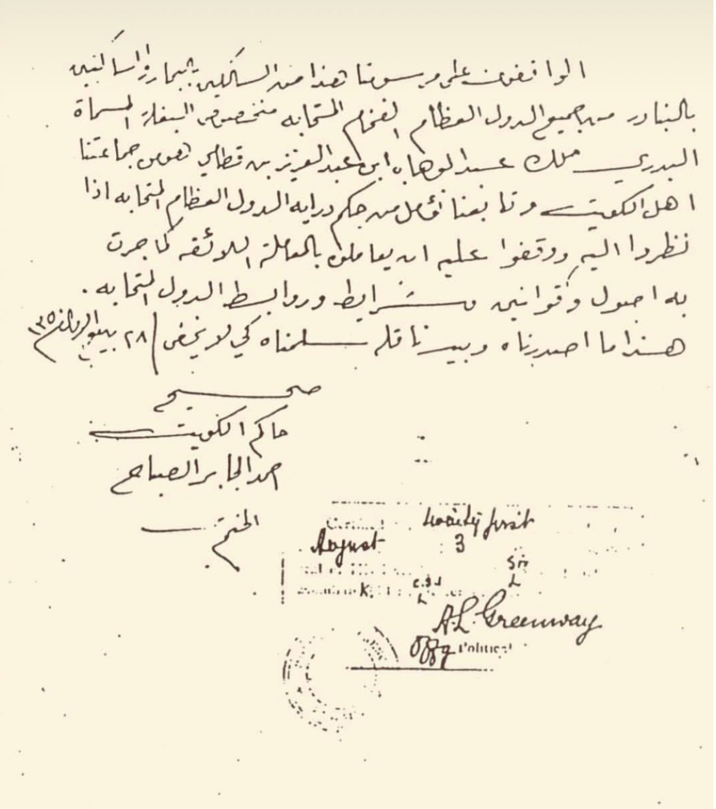

28 Rabi al-Awwal 1350 AH (13 August 1931), certified 21 August 1931 · Ship's pass issued by the Ruler of Kuwait, Sheikh Ahmad Al-Jaber Al-Sabah, with the British Political Agency's certificate of his seal
Ship's pass for Al-Badri, owned by Abdulwahab bin Abdulaziz bin Qatami
What it is
Sheikh Ahmad Al-Jaber asks all who sail the seas and live in the ports of friendly nations to treat the ship Al-Badri, owned by Abdulwahab bin Abdulaziz bin Qatami, one of the people of Kuwait, with proper courtesy. On 21 August 1931 A. L. Greenway, officiating Political Agent, certified the Ruler's seal.
Why it matters
It is the papers of Al-Badri, the family's school boat, and names its owner, Noor's great grandfather Abdulwahab.
Who is meant
Confirmed by the family: Al-Badri is the family's school boat, and Abdulwahab bin Abdulaziz bin Qatami is Noor's great grandfather.
Page copies

Original text
English translation
Notes
The Hijri year is written in short form. Read as 1350, the date is 13 August 1931, and the British certificate of the seal is dated the twenty first of August, eight days later, signed by A. L. Greenway as officiating Political Agent. Passes of this kind needed the Political Agent's certificate of the Ruler's seal; a 1929 pass for another boat, published by Bassam Al-Loughani, has the same wording and the same certificate signed by Lt. Col. Dickson.
Others named
Sources
Copy in the family Drive (Official documents folder). The original's publisher is not recorded.
How this text was made: Typed by Claude from the scan; no published transcription was found online. English translation by Claude; please review.
Open in the interactive site